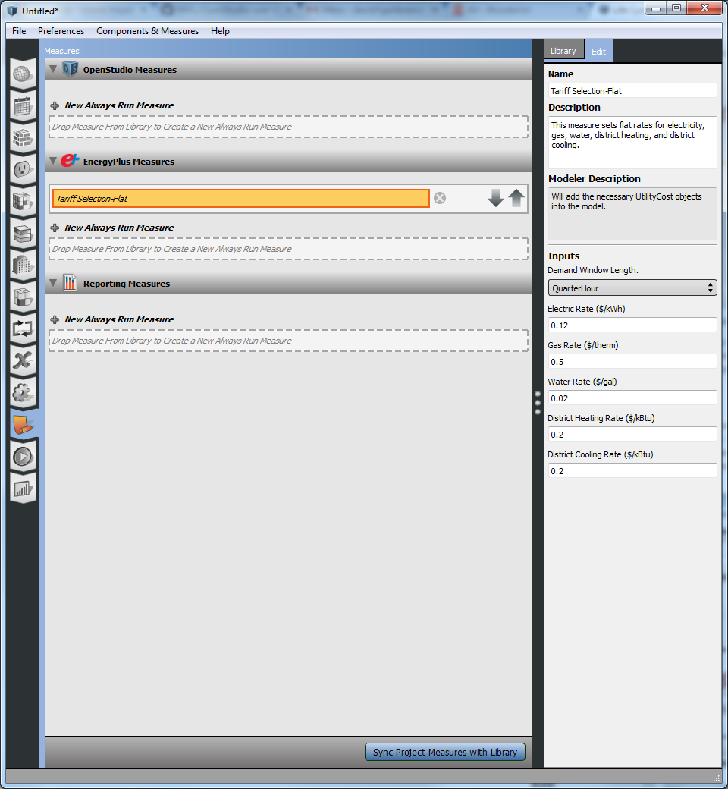
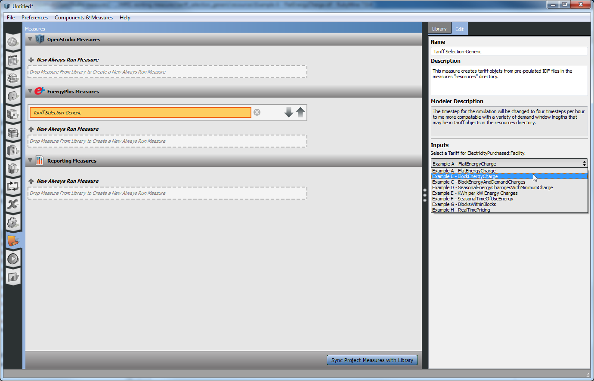

Adding Utility Rate Tariffs
Typically, life cycle cost analyses compare current capital costs required to implement energy conservation measures with future energy cost savings over the analysis period. In order to compute future energy cost savings the model must include information about the utility rate tariffs which apply to the project. Higher energy costs will give energy conservation measures a better pay back relative to their initial costs.
Currently the OpenStudio Application doesn't have a built in interface to add utility rates. Utility rates are added by including an EnergyPlus measure in your workflow as an always run measure. If you are participating in a Utility Energy Design Assistance Program then your utility has likely placed a custom measure on the Building Component Library (BCL) with valid utility rate structures. The "EDA Program Tariffs" section below covers this use case. The rest of the use cases cover users who want to create their own tariffs vs. using someone else's pre-made tariffs. Most of the measures have an argument for the "Demand Window Length". The measures confirm that the demand window length is in sync with EnergyPlus's simulation timestep.
Currently the EDA measures have tariffs for electricity and natural gas. The non-EDA measures have tariffs for electricity, natural gas, water, district heating, and district cooling. if you are running an early design simulation using Ideal air loads, your heating and cooling loads will show up ad district heating and cooling. The naming of the non-EDA measures relate to how electricity tariffs are handled. All other fuels are flat tariffs. Demand charges are only included for electricity.
EDA Program Tariffs
The arguments on an EDA based tariff measure are pretty simple. The two choices are choosing electric and gas tariffs from a pre-populated list. Currently the demand window length is hard coded to correctly match each rate. Refer to the utility's rate information or look in the "resources" directory of the measure if you want to see what goes into each tariff option.

Above: Screenshot of Xcel Energy EDA Tariff selection measure inputs.
Flat Tariffs
The flat tariff measure is the most basic non-EDA tariff measures. It has a single argument for each fuel type to define a flat tariff. It doesn't have an electricity demand change.

Above: Screenshot of Flat Tariff measure inputs.
Block Tariffs
The block tariff is similar to the flat tariff, but it allows you to define multiple blocks where the rate increases as you move into another block of consumption. There is one argument that expects comma separated values for the consumption blocks. The next argument expects comma separated values for the corresponding rates for each block described in the first measure. You should have the same number of values in each of the first two arguments. The next field defines a rate when you have exceeded the last block defined in the earlier arguments. After this you have arguments for flat rates for other fuels.

Above: Screenshot of Block Tariff measure inputs.
Time and Date Dependent Tariffs
The time and date dependent tariff has four possible rates for electricity consumption. There are on and off peak summer rates, and on and off non-summer rates. The time of day for peak and the dates for summer are user configurable. For electricity demand charge, only the season is taken into account, not the time of day. The rest of the fuels are flat rates.

Above: Screenshot of Time and Date Dependant Tariff measure inputs.
Custom Tariff Solutions
If none of these tariff examples meet your needs we have created a generic tariff measure. You can save your own IDF snippets into the "resources" directory for this measure. Each file should have one UtilityCost:Tariff object, and any associated objects that refer to it such as UtilityCost:Charge:Simple or Schedule:Compact. The Measure will create a user argument for each type of meter referred to by UtilityCost:Tariff objects in the directory. You can then choose one tariff object to be imported for each meter. It has been pre-loaded with a number of examples from the EnergyPlus Input/Output Reference

Above: Screenshot of Generic Tariff measure inputs.